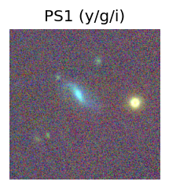
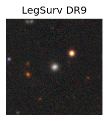
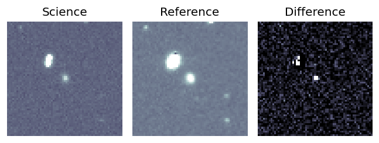
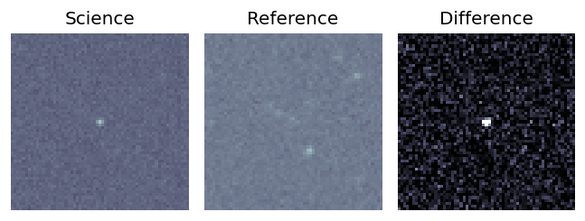
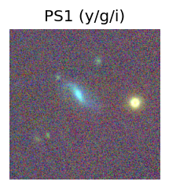
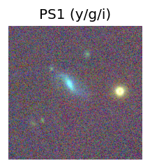
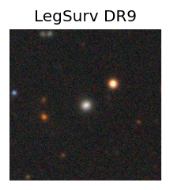
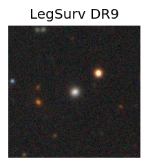

Candidate List 20250816 Previous Day Next Day Section 1: New Sources (age<1d) Cosmological Afterglow
Section 2: Old (1-5d) sources observed last night placeholder
Section 1: New Afterglow/FBOT Cands Last Night (0)
Section 2: Older Sources Observed Last Night (23)
0. ZTF25abhwfik (Afterglow?) A ) [Back to Top] [Share] [Trigger Swift] [Fritz ] [Lasair ]RA, Dec: 308.99869, 22.32448 20h35m59.68s, 22d19m28.14sGalactic (l, b): 65.17815, -10.92322 ext(g-r) = 0.15
1. ZTF25abhyrev (FBOT?) [Back to Top] [Share] [Trigger Swift] [Fritz ] [Lasair ]RA, Dec: 25.1998, 29.17377 1h40m47.95s, 29d10m25.59sGalactic (l, b): 135.71053, -32.47019 ext(g-r) = 0.062peak abs mag = -19.52 LegacySurvey: 1 sources in 3 arcsec Closest: d = 0.05 arcsec, 231.4 deg (east of north) photoz=0.14 (68% bounds 0.13, 0.14), type=SER peak abs mag = -19.57 (68% bounds -19.48, -19.65) Consistent with synchrotron, g-r>0!
2. ZTF25abidcdj (Afterglow?FBOT?) [Back to Top] [Share] [Trigger Swift] [Fritz ] [Lasair ]RA, Dec: 294.64184, -6.21331 19h38m34.04s, -6d-12m-47.91sGalactic (l, b): 32.71049, -13.29793 ext(g-r) = 0.313PS1: 1 source in 3 arcsec Closest: d = 0.19 arcsec photoz=0.06+/-0.00 peak abs mag = -19.88 Consistent with synchrotron, g-r>0!
3. ZTF25abigwry (Afterglow?) [Back to Top] [Share] [Trigger Swift] [Fritz ] [Lasair ]RA, Dec: 274.455, 11.49251 18h17m49.20s, 11d29m33.05sGalactic (l, b): 39.52283, 12.61056 ext(g-r) = 0.183PS1: 1 source in 3 arcsec Closest: d = 0.50 arcsec photoz=0.12+/-0.01 peak abs mag = -19.51
4. ZTF25abijvsm (Afterglow?) [Back to Top] [Share] [Trigger Swift] [Fritz ] [Lasair ]RA, Dec: 42.37485, 61.31089 2h49m29.96s, 61d18m39.19sGalactic (l, b): 136.61774, 1.61639 ext(g-r) = 1.032PS1: 1 source in 3 arcsec Closest: d = 9.96 arcsec photoz=0.29+/-0.66 peak abs mag = -25.15
5. ZTF25abimkyu (Afterglow?) [Back to Top] [Share] [Trigger Swift] [Fritz ] [Lasair ]RA, Dec: 311.93668, 28.87217 20h47m44.80s, 28d52m19.82sGalactic (l, b): 72.11419, -9.12479 ext(g-r) = 0.248
6. ZTF25abimlwi (Afterglow?) [Back to Top] [Share] [Trigger Swift] [Fritz ] [Lasair ]RA, Dec: 281.54095, 22.74503 18h46m9.83s, 22d44m42.12sGalactic (l, b): 52.86843, 11.25548 ext(g-r) = 0.241PS1: 1 source in 3 arcsec Closest: d = 3.85 arcsec photoz=0.51+/-0.18 peak abs mag = -24.35 Consistent with synchrotron, g-r>0!
7. ZTF25abimrij (FBOT?) [Back to Top] [Share] [Trigger Swift] [Fritz ] [Lasair ]RA, Dec: 292.54821, -19.52449 19h30m11.57s, -19d-31m-28.15sGalactic (l, b): 19.31136, -17.07136 WARNING: 2.27 deg from ecliptic plane ext(g-r) = 0.108PS1: 1 source in 3 arcsec Closest: d = 0.24 arcsec photoz=0.41+/-0.07 peak abs mag = -22.64 Consistent with synchrotron, g-r>0!
8. ZTF25abinkqp (Afterglow?) [Back to Top] [Share] [Trigger Swift] [Fritz ] [Lasair ]RA, Dec: 289.28132, 16.46426 19h17m7.52s, 16d27m51.34sGalactic (l, b): 50.46879, 1.93537 ext(g-r) = 2.69PS1: 1 source in 3 arcsec Closest: d = 1.60 arcsec photoz=1.00+/-0.18 peak abs mag = -32.76
9. ZTF25abioepd (FBOT?) [Back to Top] [Share] [Trigger Swift] [Fritz ] [Lasair ]RA, Dec: 350.87421, 25.57747 23h23m29.81s, 25d34m38.90sGalactic (l, b): 99.1319, -33.19783 ext(g-r) = 0.067peak abs mag = -19.51 LegacySurvey: 1 sources in 3 arcsec Closest: d = 2.43 arcsec, 327.4 deg (east of north) photoz=0.1 (68% bounds 0.08, 0.12), type=EXP peak abs mag = -20.02 (68% bounds -19.56, -20.47) Consistent with synchrotron, g-r>0!
10. ZTF25abipomp (FBOT?) [Back to Top] [Share] [Trigger Swift] [Fritz ] [Lasair ]RA, Dec: 189.87831, 16.60728 12h39m30.79s, 16d36m26.21sGalactic (l, b): 287.61799, 79.12282 ext(g-r) = 0.026 peak abs mag = -19.75 LegacySurvey: 1 sources in 3 arcsec Closest: d = 4.32 arcsec, 37.7 deg (east of north) photoz=0.06 (68% bounds 0.04, 0.08), type=DEV peak abs mag = -18.72 (68% bounds -17.78, -19.25)
11. ZTF25abirdsq (Afterglow?) [Back to Top] [Share] [Trigger Swift] [Fritz ] [Lasair ]RA, Dec: 293.89459, 0.78544 19h35m34.70s, 0d47m7.58sGalactic (l, b): 38.7194, -9.44417 ext(g-r) = 0.455PS1: 1 source in 3 arcsec Closest: d = 0.10 arcsec photoz=0.70+/-0.56 peak abs mag = -24.55 Consistent with synchrotron, g-r>0!
12. ZTF25abirmsp (FBOT?) [Back to Top] [Share] [Trigger Swift] [Fritz ] [Lasair ]RA, Dec: 350.92216, 27.92343 23h23m41.32s, 27d55m24.33sGalactic (l, b): 100.26744, -31.05755 ext(g-r) = 0.124 peak abs mag = -19.70 LegacySurvey: 1 sources in 3 arcsec Closest: d = 0.47 arcsec, 236.4 deg (east of north) photoz=0.09 (68% bounds 0.07, 0.11), type=REX peak abs mag = -18.52 (68% bounds -18.02, -18.91) Consistent with synchrotron, g-r>0!
13. ZTF25abiwukt (FBOT?) [Back to Top] [Share] [Trigger Swift] [Fritz ] [Lasair ]RA, Dec: 286.29408, 11.19167 19h 5m10.58s, 11d11m30.03sGalactic (l, b): 44.44949, 2.07445 ext(g-r) = 2.098PS1: 1 source in 3 arcsec Closest: d = 3.33 arcsec photoz=0.07+/-0.23 peak abs mag = -24.16
14. ZTF25abixpff (FBOT?) [Back to Top] [Share] [Trigger Swift] [Fritz ] [Lasair ]RA, Dec: 316.22297, 30.26415 21h 4m53.51s, 30d15m50.92sGalactic (l, b): 75.60927, -11.12391 ext(g-r) = 0.222PS1: 1 source in 3 arcsec Closest: d = 0.51 arcsec photoz=0.14+/-0.02 peak abs mag = -19.52 Consistent with synchrotron, g-r>0!
15. ZTF25abiynbr (Afterglow?) [Back to Top] [Share] [Trigger Swift] [Fritz ] [Lasair ]RA, Dec: 304.20015, 13.09252 20h16m48.03s, 13d 5m33.09sGalactic (l, b): 54.75185, -12.24939 ext(g-r) = 0.193PS1: 1 source in 3 arcsec Closest: d = 6.32 arcsec photoz=0.58+/-0.74 peak abs mag = -23.36
16. ZTF25abiyppo (Afterglow?) [Back to Top] [Share] [Trigger Swift] [Fritz ] [Lasair ]RA, Dec: 310.79023, 24.82362 20h43m9.66s, 24d49m25.02sGalactic (l, b): 68.21893, -10.77326 ext(g-r) = 0.171PS1: 1 source in 3 arcsec Closest: d = 4.17 arcsec photoz=0.64+/-0.16 peak abs mag = -24.32
17. ZTF25abizbzy (FBOT?) [Back to Top] [Share] [Trigger Swift] [Fritz ] [Lasair ]RA, Dec: 305.94514, -6.70651 20h23m46.83s, -6d-42m-23.44sGalactic (l, b): 37.53981, -23.56781 ext(g-r) = 0.048PS1: 1 source in 3 arcsec Closest: d = 2.27 arcsec photoz=0.17+/-0.02 peak abs mag = -20.23
18. ZTF25abizvcv (Afterglow?) [Back to Top] [Share] [Trigger Swift] [Fritz ] [Lasair ]RA, Dec: 306.5929, -16.47625 20h26m22.30s, -16d-28m-34.50sGalactic (l, b): 27.95612, -28.21754 WARNING: 2.64 deg from ecliptic plane ext(g-r) = 0.06PS1: 1 source in 3 arcsec Closest: d = 8.42 arcsec photoz=0.99+/-0.27 peak abs mag = -25.38
19. ZTF25abjacvp (Afterglow?) [Back to Top] [Share] [Trigger Swift] [Fritz ] [Lasair ]RA, Dec: 317.96104, -13.75538 21h11m50.65s, -13d-45m-19.37sGalactic (l, b): 36.03384, -37.26574 WARNING: 2.33 deg from ecliptic plane ext(g-r) = 0.059
20. ZTF25abjamjh (FBOT?) [Back to Top] [Share] [Trigger Swift] [Fritz ] [Lasair ]RA, Dec: 344.19926, 8.91931 22h56m47.82s, 8d55m9.51sGalactic (l, b): 81.31029, -44.49166 ext(g-r) = 0.066peak abs mag = -22.49 LegacySurvey: 1 sources in 3 arcsec Closest: d = 0.28 arcsec, 90.4 deg (east of north) photoz=0.14 (68% bounds 0.13, 0.16), type=SER peak abs mag = -19.25 (68% bounds -19.01, -19.5) Consistent with synchrotron, g-r>0!
21. ZTF25abjbadu (FBOT?) [Back to Top] [Share] [Trigger Swift] [Fritz ] [Lasair ]RA, Dec: 24.56934, 34.61366 1h38m16.64s, 34d36m49.16sGalactic (l, b): 133.76337, -27.27102 ext(g-r) = 0.042peak abs mag = nan PS1: 1 source in 3 arcsec Closest: d = 8.95 arcsec photoz=0.71+/-0.14 peak abs mag = -23.83 Consistent with synchrotron, g-r>0!
22. ZTF25abjcowx (FBOT?) [Back to Top] [Share] [Trigger Swift] [Fritz ] [Lasair ]RA, Dec: 40.98811, -7.48907 2h43m57.15s, -7d-29m-20.64sGalactic (l, b): 181.76662, -56.88851 ext(g-r) = 0.031peak abs mag = -22.48 LegacySurvey: 1 sources in 3 arcsec Closest: d = 1.48 arcsec, 31.0 deg (east of north) photoz=0.01 (68% bounds 0.01, 0.07), type=SER peak abs mag = -14.32 (68% bounds -13.62, -17.93) 


 



 
